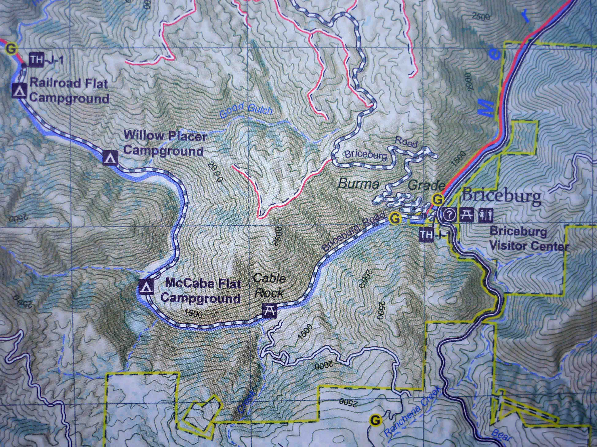

Support Local Trails while you Shop
Turn your local grocery shopping into support for local trails. Learn more here
Be part of the Mariposa Trails Community
Volunteers fill a variety of roles on our trail team, operational support team and leadership team. Build your skills. Flex your skills. Be supported. Give back and enjoy the rewards of community.
I want to volunteer
Purchase a Mariposa Trail Map
This map was crafted to share local knowledge of where, how and when to safely venture into the beautiful and challenging landscape of the Merced River Canyonlands and Mariposa foothills. The user-friendly “trail finder” is packed with key information on length, difficulty, elevation change, users and trailhead directions. Explore the landmarks, roads, trails, rivers and topography. The guide also includes “Trail Smart” advice for safer adventures, an outline of the human and natural history of this area and our principle of promoting reciprocity with nature. .
To many, a trailhead is just a place to park and start a hike or ride, but for Mariposa Trails it is the place where a relationship between the user and nature begins. From this perspective, the map is not only a guide to recreate safely, but also a guide that encourages us to forge a healthy reciprocal relationship with the land.
Beautifully printed on tear and water-resistant paper, this is not only an excellent map and guide, but also a lasting memento of this special place. All proceeds go towards furthering the Mariposa Trails mission-- building trails and community by providing trail access and promoting its use for adventure, health, stewardship, education and community prosperity.
Click the link below to learn more about the map and how to purchase it.

Donate
MARIPOSA TRAILS is intentional about maintaining low overhead, steadfast in our support and value of volunteers, and maximizes our productivity through partnerships and grants. Your financial support is essential to sustain our work in the community.